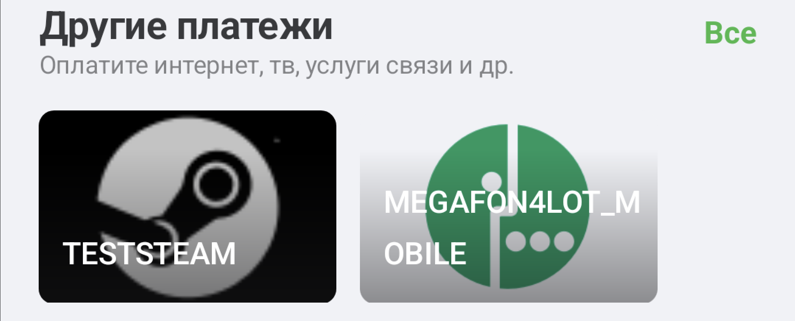

Новая главная страница
1. Главный контейнер
1. Реализована загрузка блоков главного экрана независимо друг от друга со скелетной анимацией и плавным переходом через fade из состояния загрузки к контенту.
Для блока партнеров анимация является адаптивной из-за нескольких существующих состояний этого блока (с избранными платежами / список всех партнеров / с плашкой "Все партнеры" и т.д.) - запоминаем последнее состояние блока партнеров и на его основе в следующий раз показываем соответсвующий скелет для минимизации вероятности скачков UI из-за разницы по высоте скелета и показанного после контента)
2. Кастомный индикатор pull to refresh на основе компонента spinner из дизайн системы
3. При горизонтальном скролле контент (обычно сторисы) обрезается с учетом скруглений основной карточки
4. Сохранение состояния экрана при навигации
2. Тулбар
1. Добавлен ripple эффект при нажатии на элементы тулбара
2. Добавлена анимация badge-индикатора при наличии новых уведомлений (проигрывается 3 раза после открытия экрана)
3. Баланс
1. Добавлена более выразительная ripple анимация при нажатии на кнопку "Перевести"
2. Добавлен анимированный градиент на кнопку "Пополнить"
Показывается для только что идентифицированного пользователя
3. Добавлена тактильная отдача при нажатии на кнопки
Возможно проверить только на физическом устройстве
4. Зеленый фон скроллится с parallax эффектом
Фон скроллится в 4 раза медленнее фактического скролла относительно карточки, баланс и кнопки - в 2 раза медленнее
4. Stories
1. Добавлено кэширование сторисов - при переходе на другой экран и возвращении на главную сторисы не пересоздаются со скачком всего контента по вертикали
5. Партнеры
1. Отображение badge (зеленых ленточек)
2. Ripple анимация нажатия на элементы
3. Адаптивная ширина избранных платежей
Если платежей не больше двух - карточки платежа становятся шире, иначе отображаются более компактно
4. Snap анимация пост скролла избранных платежей
5. Анимация warning индикатора при наличии букмекеров, требующих внимание
6. Платежи
В блоке с другими платежами теперь отображаются категории, а не сами платежи. При клике на категорию происходит переход к экрану всех платежей с автоскроллом к выбранной категории.

1. Ripple анимация нажатия на карточку категории
2. Snap анимация постскролла
3. Открытие экрана сканирования qr по тапу на категорию qr
7. Кешбэк
1. Карточки выглядят более компактно по ширине
2. Добавлена ripple анимация нажатия на карточку
3. При нажатии на бонусы от партнеров отображается pull to refresh индикация загрузки для проверки наличия выпущенной карты
8. Экран с причинами блокировок
1. Добавлена индикация нажатия на ссылку
2. Таймер для верификации в cyberity теперь не статичный, а отсчитывает время и меняет доступность кнопки